공조냉동기계산업기사 (2015-08-16 기출문제)
1과목: 공기조화
1. 기화식(증발식) 가습장치의 종류로 옳은 것은?
- 원심식, 초음파식, 분무식
- 전열식, 전극식, 적외선식
- 과열증기식, 분무식, 원심식
- 회전식, 모세관식, 적하식
(정답률: 83%)

2. 덕트 병용 팬 코일 유닛(fan coil unit)방식의 특징이 아닌 것은?
- 열부하가 큰 실에 대해서도 열부하의 대부분을 수배관으로 처리할 수 있으므로 덕트 치수가 적게 된다.
- 각 실 부하 변동을 용이하게 처리할 수 있다.
- 각 유닛의 수동제어가 가능하다.
- 청정구역에 많이 사용된다.
(정답률: 66%)
3. 중앙식(전공기) 공기조화 방식의 특징에 관한 설명으로 틀린 것은?
- 중앙집중식이므로 운전, 보수관리를 집중화할 수 있다.
- 대형 건물에 적합하며 외기냉방이 가능하다.
- 덕트가 대형이고 개별식에 비해 설치 공간이 크다.
- 송풍 동력이 적고 겨울철 가습하기가 어렵다.
(정답률: 82%)
4. 온수난방에 대한 설명으로 옳지 않은 것은?
- 온수난방의 주 이용 열은 잠열이다.
- 열용량이 커서 예열 시간이 길다.
- 증기난방에 비해 비교적 높은 쾌감도를 얻을 수 있다.
- 온수의 온도에 따라 저온수식과 고온수식으로 분류한다.
(정답률: 84%)
5. 급수온도 35℃에서 증기압력 15kg/cm2, 온도 400℃의 증기를 40kg/h 발생시키는 보일러의 마력(HP)은? (단, 15kg/cm2, 400℃에서 과열증기 엔탈피는 784.2kcal/kg이다.)
- 2.43
- 2.62
- 3.55
- 3.72
(정답률: 43%)
6. 가열코일을 흐르는 증기의 온도를 ts, 가열코일 입구공기온도를 t1, 출구공기온도를 t2라고 할 때 산술평균온도식으로 옳은 것은?
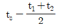
- t2-t1
- t1+t2
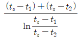
(정답률: 73%)
7. 송풍기 특성곡선에서 송풍기의 운전점에 대한 설명으로 옳은 것은?
- 압력곡선과 저항곡선의 교차점
- 효율곡선과 압력곡선의 교차점
- 축동력곡선과 효율곡선의 교차점
- 저항곡선과 축동력곡선의 교차점
(정답률: 71%)
8. 콜드 드래프트(cold draft) 현상이 가중되는 원인으로 가장 거리가 먼 것은?
- 인체 주위의 공기온도가 너무 낮을 때
- 인체 주위의 기류속도가 작을 때
- 주위 공기의 습도가 낮을 때
- 주위 벽면의 온도가 낮을 때
(정답률: 85%)
9. 냉방부하 종류 중 현열로만 이루어진 부하는?
- 조명에서의 발생 열
- 인체에서의 발생 열
- 문틈에서의 틈새 바람
- 실내기구에서의 발생 열
(정답률: 87%)
10. 다음 중 필터의 모양은 패널형, 지그재그형, 바이패스형 등이 있으며, 유해가스나 냄새를 제거할 수 있는 것은?
- 건식 여과기
- 점성식 여과기
- 전자식 여과기
- 활성탄 여과기
(정답률: 87%)
11. 덕트의 분기점에서 풍량을 조절하기 위하여 설치하는 댐퍼는 어느 것인가?
- 방화 댐퍼
- 스플릿 댐퍼
- 볼륨 댐퍼
- 터닝 베인
(정답률: 76%)
12. 다음 중 천장형으로서 취출기류의 확산성이 가장 큰 취출구는?
- 펑커루버
- 아네모스탯
- 에어커튼
- 고정날개 그릴
(정답률: 67%)
13. 실내 냉난방 부하 계산에 관한 내용으로 설명이 부적당한 것은?
- 열부하 구성 요소 중 실내 부하는 유리면 부하, 구조체 부하, 틈새바람 부하, 내부 칸막이 부하 및 실내 발열부하로 구성된다.
- 열부하 계산의 목적은 실내 부하의 상태, 덕트나 배관의 크기 등을 구하기 위한 기초가 된다.
- 최대 난방 부하란 실내에서 발생되는 부하가 1일 중 가장 크게 되는 시각의 부하로서 저녁에 발생한다.
- 냉방 부하란 쾌적한 실내 환경을 유지하기 위하여 여름철 실내 공기를 냉각, 감습시켜 제거하여야 할 열량을 의미한다.
(정답률: 83%)
14. 지하철 터널 환기의 열부하에 대한 종류로 가장 거리가 먼 것은?
- 열차주행에 의한 발열
- 열차 제동 발생 열량
- 보조기기에 의한 발열
- 열차 냉방기에 의한 발열
(정답률: 71%)
15. 실내온도가 25℃이고, 실내 절대습도가 0.0165kg/kg의 조건에서 틈새바람에 의한 침입 외기량이 200L/s일때 현열부하와 잠열부하는? (단, 실외온도 35℃, 실외 절대습도 0.0321kg/kg, 공기의 비열 1.01kJ/kg·K, 물의 증발잠열 2501kJ/kg이다.)
- 현열부하 2.42kW, 잠열부하 7.803kW
- 현열부하 2.42kW, 잠열부하 9.364kW
- 현열부하 2.825kW, 잠열부하 10.144kW
- 현열부하 2.825kW, 잠열부하 10.924kW
(정답률: 71%)
16. 다음 그림의 방열기 도시기호 중 ‘W-H’가 나타내는 의미는 무엇인가?
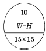
- 방열기 쪽수
- 방열기 높이
- 방열기 종류(형식)
- 연결배관의 종류
(정답률: 90%)
17. 가변풍량(VAV) 방식에 관한 설명으로 틀린 것은?
- 각 방의 온도를 개별적으로 제어할 수 있다.
- 연간 송풍 동력이 정풍량 방식보다 적다.
- 부하의 증가에 대해서 유연성이 있다.
- 동시 부하율을 고려하여 용량을 결정하기 때문에 설비 용량이 크다.
(정답률: 55%)
18. 다음 중 라인형 취출구의 종류가 아닌 것은?
- 캄라인형
- 다공판형
- 펑커루버형
- 슬롯형
(정답률: 78%)
19. 덕트의 치수 결정법에 대한 설명으로 옳은 것은?
- 등속법은 각 구간마다 압력손실이 같다.
- 등마찰 손실법에서 풍량이 10000m3/h 이상이 되면 정압재취득법으로 하기도 한다.
- 정압재취득법은 취출구 직전의 정압이 대략 일정한 값으로 된다.
- 등마찰 손실법에서 각 구간마다 압력손실을 같게 해서는 안 된다.
(정답률: 69%)
20. 실내의 현열부하가 7500kcal/h, 실내와 말단장치(diffuser)의 온도가 각각 27℃, 17℃일 때 송풍량은?
- 3125kg/h
- 2586kg/h
- 2325kg/h
- 2186kg/h
(정답률: 43%)
2과목: 냉동공학
21. 냉동장치 내의 불응축 가스가 혼입되었을 때 냉동장치의 운전에 미치는 영향으로 가장 거리가 먼 것은?
- 열교환 작용을 방해하므로 응축압력이 낮게 된다.
- 냉동능력이 감소한다.
- 소비전력이 증가한다.
- 실린더가 과열되고 윤활유가 열화 및 탄화된다.
(정답률: 71%)
22. 플래시 가스(flash gas)는 무엇을 말하는가?
- 냉매 조절 오리피스를 통과할 때 즉시 증발하여 기화하는 냉매이다.
- 압축기로부터 응축기에 새로 들어오는 냉매이다.
- 증발기에서 증발하여 기화하는 새로운 냉매이다.
- 압축기에서 응축기에 들어오자 마자 응축하는 냉매이다.
(정답률: 77%)
23. 몰리에르 선도 상에서 건조도(x)에 관한 설명으로 옳은 것은?
- 몰리에르 선도의 포화액선상 건조도는 1이다.
- 액체 70%, 증기 30%인 냉매의 건조도는 0.7이다.
- 건조도는 습포화증기 구역 내에서만 존재한다.
- 건조도라 함은 과열증기 중 증기에 대한 포화액체의 양을 말한다.
(정답률: 71%)
24. 액분리기(Accumulator)에서 분리된 냉매의 처리방법이 아닌 것은?
- 가열시켜 액을 증발 후 응축기로 순환시키는 방법
- 증발기로 재순환시키는 방법
- 가열시켜 액을 증발 후 압축기로 순환시키는 방법
- 고압측 수액기로 회수하는 방법
(정답률: 66%)
25. 팽창밸브 개도가 냉동 부하에 비하여 너무 작을 때 일어나는 현상으로 가장 거리가 먼 것은?
- 토출가스 온도상승
- 압축기 소비동력 감소
- 냉매순환량 감소
- 압축기 실린더 과열
(정답률: 67%)
26. 압축기 기동 시 윤활유가 심한 기포현상을 보일 때 주된 원인은?
- 냉동능력이 부족하다.
- 수분이 다량 침투했다.
- 응축기의 냉각수가 부족하다.
- 냉매가 윤활유에 다량 녹아있다.
(정답률: 74%)
27. 응축기의 냉각 방법에 따른 분류로서 가장 거리가 먼 것은?
- 공랭식
- 노냉식
- 증발식
- 수냉식
(정답률: 78%)
28. 어떤 냉동장치에서 응축기용의 냉각수 유량이 7000kg/h이고 응축기 입구 및 출구 온도가 각각 15℃와 28℃이었다. 압축기로 공급한 동력이 5.4×104kJ/h이라면 이 냉동기의 냉동능력은? (단, 냉각수의 비열은 4.185kJ/kg·K이다.)
- 2.27×105kJ/h
- 3.27×105kJ/h
- 4.67×105kJ/h
- 5.67×105kJ/h
(정답률: 57%)
29. 다음과 같은 성질을 갖는 냉매는 어느 것인가?
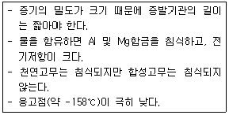
- NH3
- R - 12
- R - 21
- H2
(정답률: 59%)
30. 어떤 냉동기로 1시간당 얼음 1ton을 제조하는데 50PS의 동력을 필요로 한다. 이때 사용하는 물의 온도는 10℃이며 얼음은 -10℃이었다. 이 냉동기의 성적계수는? (단, 융해열은 335kJ/kg이고, 물의 비열은 4.2kJ/kg·K,얼음의 비열은 2.09kJ/kg·K이다.)
- 2.0
- 3.0
- 4.0
- 5.0
(정답률: 54%)
31. 왕복동식과 비교하여 스크롤 압축기의 특징으로 틀린 것은?
- 흡입밸브나 토출밸브가 있어 압축효율이 낮다.
- 토크 변동이 적다.
- 압축실 사이의 작동가스의 누설일 적다.
- 부품수가 적고 고효율 저소음, 저진동, 고신뢰성을 기대할 수 있다.
(정답률: 68%)
32. 이상 기체를 정압하에서 가열하면 체적과 온도의 변화는 어떻게 되는가?
- 체적증가, 온도상승
- 체적일정, 온도일정
- 체적증가, 온도일정
- 체적일정, 온도상승
(정답률: 82%)
33. 다음의 몰리에르 선도는 어떤 냉동장치를 나타낸 것인가?
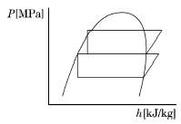
- 1단압축 1단팽창 냉동시스템
- 1단압축 2단팽창 냉동시스템
- 2단압축 1단팽창 냉동시스템
- 2단압축 2단팽창 냉동시스템
(정답률: 86%)
34. 냉동사이클에서 응축온도를 일정하게 하고 증발온도를 상승시키면 어떤 결과가 나타는가?
- 냉동효과 증가
- 압축비 증가
- 압축일량 증가
- 토출가스 온도 증가
(정답률: 67%)
35. 30℃의 공기가 체적 1m3의 용기에 게이지 압력 5kg/cm2의 상태로 들어 있다. 용기 내에 있는 공기의 무게?
- 약 2.6kg
- 약 6.8kg
- 약 69kg
- 약 298kg
(정답률: 53%)
36. 몰리에르 선도 상에서 압력이 증대함에 따라 포화액선과 건조포화 증기선이 만나는 일치점을 무엇이라고 하는가?
- 한계점
- 임계점
- 상사점
- 비등점
(정답률: 89%)
37. 증발식 응축기에 관한 설명으로 틀린 것은?
- 수냉식응축기와 공랭식응축기의 작용을 혼합한 형이다.
- 외형과 설치면적이 작으며 값이 비싸다.
- 겨울철에는 공랭식으로 사용할 수 있으며 연간운전에 특히 우수하다.
- 냉매가 흐르는 관에 노즐로부터 물을 분무시키고 송풍기로 공기를 보낸다.
(정답률: 66%)
38. 브라인의 구비조건으로 틀린 것은?
- 상 변화가 잘 일어나서는 안 된다.
- 응고점이 낮아야 한다.
- 비열이 적어야 한다.
- 열전도율이 커야 한다.
(정답률: 64%)
39. 다음의 압력-엔탈피 선도를 이용한 압축냉동 사이클의 성적계수는?
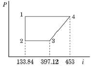
- 2.36
- 4.71
- 9.42
- 18.84
(정답률: 76%)
40. 증발기에서 나오는 냉매가스의 과열도를 일정하게 유지하기 위해 설치하는 밸브는?
- 모세관
- 플로트형 밸브
- 정압식 팽창 밸브
- 온도식 자동팽창 밸브
(정답률: 76%)
3과목: 배관일반
41. 열팽창에 의한 배관의 신축이 방열기에 미치지 않도록 하기 위하여 방열기 주위의 배관은 다음 중 어느 방법으로 하는 것이 좋은가?
- 슬리브형 신축 이음
- 신축 곡관 이음
- 스위블 이음
- 벨로우즈형 신축 이음
(정답률: 70%)
42. 급수 배관을 시공할 때 일반적인 사항을 설명한 것 중 틀린 것은?
- 급수관에서 상향 급수는 선단 상향구배로 한다.
- 급수관에서 하향 급수는 선단 하향구배로 하며, 부득이한 경우에는 수평으로 유지한다.
- 급수관 최하부에 배수 밸브를 장치하면 공기빼기를 장치할 필요가 없다.
- 수격작용 방지를 위해 수전 부근에 공기실을 설치한다.
(정답률: 71%)
43. 100A 강관을 B호칭으로 표시하면 얼마인가?
- 4B
- 10B
- 16B
- 20B
(정답률: 76%)
44. 주철관의 특징에 대한 설명으로 틀린 것은?(문제 오류로 가답안 발표시 1번으로 발표되었지만 확정답안 발표시 1, 3번이 정답 처리 되었습니다. 여기서는 가답안인 1번을 누르면 정답 처리 됩니다.)
- 충격에 강하고 내구성일 크다.
- 내식성, 내열성이 있다.
- 다른 배관재에 비하여 열팽창계수가 크다.
- 소음을 흡수하는 성질이 있으므로 옥내배수용으로 적합하다.
(정답률: 75%)
45. 유속 2.4m/s, 유량 15000L/h일 때 관경을 구하면 몇 mm인가?
- 42
- 47
- 51
- 53
(정답률: 53%)
46. 진공환수식 증기난방법에 관한 설명으로 옳은 것은?
- 다른 방식에 비해 관 지름이 커진다.
- 주로 중·소규모 난방에 많이 사용된다.
- 환수관 내 유속의 감소로 응축수 배출이 느리다.
- 환수관의 진공도는 100~250mmHg 정도로 한다.
(정답률: 65%)
47. 송풍기의 토출측과 흡입측에 설치하여 송풍기의 진동이 덕트나 장치에 전달되는 것을 방지하기 위한 접속법은?
- 크로스 커넥션(cross connection)
- 캔버스 커넥션(canvas connection)
- 서브 스테이션(sub station)
- 하트포드(hartford) 접속법
(정답률: 82%)
48. 다음 중 개방식 팽창탱크 주위의 관으로 해당되지 않는 것은?
- 압축공기 공급관
- 배기관
- 오버플로우관
- 안전관
(정답률: 52%)
49. 수직관 가까이에 기구가 설치되어 있을 때 수직관 위로부터 일시에 다량의 물이 흐르게 되면 그 수직관과 수평관의 연결관에 순간적으로 진공이 생기면서 봉수가 파괴되는 현상은?
- 자기 사이펀작용
- 모세관작용
- 분출작용
- 흡출작용
(정답률: 47%)
50. 배관재료 선정 시 고려해야 할 사항으로 가장 거리가 먼 것은?
- 관속을 흐르는 유체의 화학적 성질
- 관속을 흐르는 유체의 온도
- 관의 이음방법
- 관의 압축성
(정답률: 61%)
51. 일반적으로 관의 지름이 크고 가끔 분해할 경우 사용되는 파이프 이음은?
- 플랜지 이음
- 신축 이음
- 용접 이음
- 턱걸이 이음
(정답률: 86%)
52. 다음 보기에서 설명하는 난방 방식은?
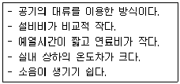
- 지역 난방
- 온수 난방
- 온풍 난방
- 복사 난방
(정답률: 84%)
53. 배관은 길이가 길어지면 관 자체의 하중, 열에 의한 신축, 유체의 흐름에 발생하는 진동이 배관에 작용한다. 이것을 방지하기 위한 관지지 장치의 종류가 아닌 것은?
- 서포트(support)
- 레스트레인트(restraint)
- 익스팬더(expander)
- 브레이스(brace)
(정답률: 71%)
54. 다음 중 배관의 부식방지 방법이 아닌 것은?
- 전기절연을 시킨다.
- 도금을 한다.
- 습기와의 접촉을 피한다.
- 열처리를 한다.
(정답률: 72%)
55. 가스배관에 있어서 가스가 누설될 경우 중독 및 폭발사고를 미연에 방지하기 위하여 조금만 누설되어도 냄새로 충분히 감지 할 수 있도록 설치하는 장치는?
- 부스터설비
- 정압기
- 부취설비
- 가스홀더
(정답률: 85%)
56. 배수관에서 발생한 해로운 하수가스의 실내 침입을 방지하기 위해 배수트랩을 설치한다. 배수트랩의 종류가 아닌 것은?
- 가솔린트랩
- 디스크트랩
- 하우스트랩
- 벨트랩
(정답률: 66%)
57. 건식 진공 환수배관의 증기주관의 적절한 구배는?
- 1/100~1/150의 선하(先下)구배
- 1/200~1/300의 선하(先下)구배
- 1/350~1/400의 선하(先下)구배
- 1/450~1/500의 선하(先下)구배
(정답률: 62%)
58. 증기 트랩장치에서 벨로즈 트랩을 안전하게 작동시키기 위해 트랩 입구쪽에 최저 약 몇 m이상을 냉각관으로 해야 하는가?
- 0.1
- 0.4
- 0.8
- 1.2
(정답률: 67%)
59. 배관 부속 중 분기관을 낼 때 사용하는 것은?
- 밴드
- 엘보
- 티
- 유니온
(정답률: 81%)
60. 도시가스 배관의 손상을 방지하기 위하여 도시 가스배관 주위에서 다른 매설물을 설치할 때 적절한 이격거리는?
- 20㎝ 이상
- 30㎝ 이상
- 40㎝ 이상
- 50㎝ 이상
(정답률: 75%)
4과목: 전기제어공학
61. 서보기구에서의 제어량은?
- 유량
- 위치
- 주파수
- 전압
(정답률: 76%)
62. 유도전동기에서 인가전압은 일정하고 주파수가 수 % 감소할 때 발생되는 현상으로 틀린 것은?
- 동기속도가 감소한다.
- 철손이 약간 증가한다.
- 누설리액턴스가 증가한다.
- 역률이 나빠진다.
(정답률: 57%)
63. 부하 1상의 임피던스가 60+j80Ω인 △결선의 3상 회로에 100V의 전압을 가할 때 선전류는 몇 A인가?
- 1
- √3
- 3
- 1/√3
(정답률: 66%)
64. 다음 중 압력을 변위로 변환시키는 장치로 알맞은 것은?
- 노즐플래퍼
- 다이어프램
- 전자석
- 차동변압기
(정답률: 63%)
65. 다음 중 온도보상용으로 사용되는 것은?
- 다이오드
- 다이액
- 서미스터
- SCR
(정답률: 84%)
66. 그림과 같은 회로의 출력단 X의 진리값으로 옳은 것은? (단, L은 Low, H는 High이다.)
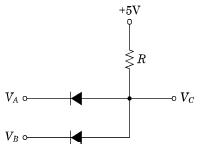
- L, L, L, H
- L, H, H, H
- L, L, H. H
- H, L, L, H
(정답률: 67%)
67. 궤환제어계에서 제어요소란?
- 조작부와 검출부
- 조절부와 검출부
- 목푯값에 비례하는 신호 발생
- 동작신호를 조작량으로 변화
(정답률: 53%)
68. 피드백 제어계의 특징으로 옳은 것은?
- 정확성이 떨어진다.
- 감대폭이 감소한다.
- 계의 특성 변화에 대한 입력 대 출력비의 감도가 감소한다.
- 발진이 전혀 없고 항상 안정한 상태로 되어 가는 경향이 있다.
(정답률: 72%)
69. 어떤 대상물의 현재 상태를 사람이 원하는 상태로 조절 하는 것을 무엇이라 하는가?
- 제어량
- 제어대상
- 제어
- 물질량
(정답률: 74%)
70. 권수 50회이고 자기인덕턴스가 0.5mH인 코일이 있을 때 여기에 전류 50A를 흘리면 자속은 몇 Wb인가?
- 5×10-3
- 5×10-4
- 2.5×10-2
- 2.5×10-3
(정답률: 54%)
71. 그림과 같은 피드백 블록선도의 전달함수는?
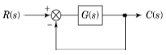
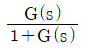
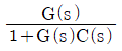
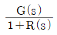
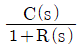
(정답률: 73%)
72. 직류기에서 불꽃 없이 정류를 얻는데 가장 유효한 방법은?
- 탄소브러시와 보상권선
- 자기포화와 브러시 이동
- 보극과 탄소브러시
- 보극과 보상권선
(정답률: 58%)
73. 분산기동형 단상유도전동기를 역회전시키는 방법은?
- 주권선과 보조권선 모두를 전원에 대하여 반대로 접속한다.
- 콘덴서를 주권선에 삽입하여 위상차를 갖게 한다.
- 콘덴서를 보조권선에 삽입한다.
- 주권선과 보조권선 중 하나를 전원에 대하여 반대로 접속한다.
(정답률: 75%)
74. R-L-C 직렬회로에서 소비전력이 최대가 되는 조건은?
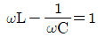
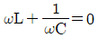
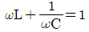
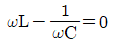
(정답률: 66%)
75. 폐루프 제어계에서 전동기의 회전속도는 궤환요소로서 전동기 축에 커플링을 통해서 결합되는 타코제너레이터(T.G)와 같은 다음의 어떤 요소로서 측정이 되는가?
- 포텐쇼 미터
- 용력 게이지
- 로드 셀
- 서보 센서
(정답률: 61%)
76. 안정된 필요조건을 갖춘 특성방정식은?
- s4+2s2+5s+5=0
- s3-s2-3s+10=0
- s3+3s2+3s-3=0
- s3+6s2+10s+9=0
(정답률: 74%)
77. 15C의 전기가 3초간 흐르면 전류(A) 값은?
- 2
- 3
- 4
- 5
(정답률: 80%)
78. 어떤 계기에 장시간 전류를 통전한 후 전원을 OFF 시켜도 지침이 0으로 되지 않았다. 그 원인에 해당되는 것은?
- 정전계 영향
- 스프링의 피로도
- 외부자계 영향
- 자기가열 영향
(정답률: 77%)
79. 변압기의 특성 중 규약효율이란?
- 출력/(출력-손실)
- 출력/(출력+손실)
- 입력/(입력-손실)
- 입력/(입력+손실)
(정답률: 61%)
80. 자동제어계에서 각 요소를 블록선도로 표시할 때 각 요소는 전달함수로 표시한다. 신호의 전달경로는 무엇으로 표현하는가?
- 접점
- 점선
- 화살표
- 스위치
(정답률: 83%)